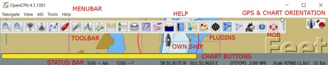
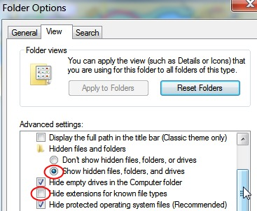

Download your version of OpenCPN here

(#log-config)
$gedit `echo $HOME/opencpn.log`
$gedit `echo $HOME/.opencpn/opencpn.conf`
Of course you can swap “gedit” for your favorite editor.
For example, the C:\ProgramData folder is by default hidden in Windows 7. Here's how to get to it. To access it you need to un-hide it by doing the following:

Now you will be able to find your logfile.
On Mac OS X , the logfile, “opencpn.log” , is in / Users/ “user name” /Library/Logs/ and the “opencpn.ini ” is in the / Users/ “user name” /Library/Preferences/opencpn/ directory.